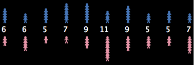

What to do:
- Start NetLogo.
- Choose “Models Library” from the File menu.

- Open the “Social Science” folder.
- Click on the model called “Party”.
- Press the “open” button.
- Press the “setup” button.
This activity gets you thinking about computer modeling and how you can use it. It also gives you insight into NetLogo itself. We encourage beginning users to start here.
Have you ever been at a party and noticed how people cluster in groups? You may have also noticed that people don’t just stay in a group. As they circulate, the groups change. If you watched these changes over time, you might notice patterns.
For example, in social settings, people may exhibit different behavior than at work or home. Individuals who are confident within their work environment may become shy and timid at a social gathering. And others who are reserved at work may be the “party starter” with friends.
These patterns can depend on the type of gathering. In some settings, people are trained to organize themselves into mixed groups; for example, party games or school-like activities. But in a non-structured atmosphere, people tend to group in a more random manner.
Is there any type of pattern to this kind of grouping?
Let’s take a closer look at this question by using the computer to model human behavior at a party. NetLogo’s “Party” model looks specifically at the question of grouping by gender at parties: why do groups tend to form that are mostly men, or mostly women?
Let’s use NetLogo to explore this question.
What to do:
- Start NetLogo.
- Choose “Models Library” from the File menu.
- Open the “Social Science” folder.
- Click on the model called “Party”.
- Press the “open” button.
- Press the “setup” button.
In the view of the model, you will see pink and blue groups with numbers: 
These lines represent mingling groups at a party. Men are shown as blue, women pink. The numbers are the sizes of the groups.
Do all the groups have about the same number of people?
Do all the groups have about the same number of each sex?
Let’s say you are having a party and invited 150 people. You are wondering how people will gather together. Suppose 10 groups form at the party.
How do you think they will group?
Instead of asking 150 of your closest friends to gather and randomly group, let’s have the computer simulate this situation for us.
What to do:
- Press the “go” button. (Pressing “go” again will stop the model manually.)
- Observe the movement of people until the model stops.
- Watch the plots to see what’s happening in another way.
- Use the speed slider if you need to slow the model down.
Now how many people are in each group?
Originally, you may have thought 150 people splitting into 10 groups, would result in about 15 people in each group. From the model, we see that people did not divide up evenly into the 10 groups. Instead, some groups became very small, whereas other groups became very large. Also, the party changed over time from all mixed groups of men and women to all single-sex groups.
What could explain this?
There are lots of possible answers to this question about what happens at real
parties. The designer of this simulation thought that groups at parties don’t
just form randomly. The groups are determined by how the individuals at the
party behave. The designer chose to focus on a particular variable, called
“tolerance”:

Tolerance is defined here as the percentage of people of the opposite sex an individual is “comfortable” with. If the individual is in a group that has a higher percentage of people of the opposite sex than their tolerance allows, then they become “uncomfortable” and leave the group to find another group.
For example, if the tolerance level is set at 25%, then males are only “comfortable” in groups that are less than 25% female, and females are only “comfortable” in groups that are less than 25% male.
As individuals become “uncomfortable” and leave groups, they move into new groups, which may cause some people in that group to become “uncomfortable” in turn. This chain reaction continues until everyone at the party is “comfortable” in their group.
Note that in the model, “tolerance” is not fixed. You, the user, can use the tolerance “slider” to try different tolerance percentages and see what the outcome is when you start the model over again.
How to start over:
- If the “go” button is pressed (black), then the model is still running. Press the button again to stop it.
- Adjust the “tolerance” slider to a new value by dragging its red handle.
- Press the “setup” button to reset the model.
- Press the “go” button to start the model running again.
As the host of the party, you would like to see both men and women mingling within the groups. Adjust the tolerance slider on the side of the view to get all groups to be mixed as an end result.
To make sure all groups of 10 have both sexes, at what level should we set the tolerance?
Test your predictions on the model.
Can you see any other factors or variables that might affect the male to female ratio within each group?
Make predictions and test your ideas within this model.
As you are testing your hypotheses, you will notice that patterns are emerging from the data. For example, if you keep the number of people at the party constant but gradually increase the tolerance level, more mixed groups appear.
How high does the tolerance value have to be before you get mixed groups?
What percent tolerance tends to produce what percentage of mixing?
Using NetLogo to model a situation like a party allows you to experiment with a system in a rapid and flexible way that would be difficult to do in the real world. Modeling also gives you the opportunity to observe a situation or circumstance with less prejudice, as you can examine the underlying dynamics of a situation. You may find that as you model more and more, many of your preconceived ideas about various phenomena will be challenged. For example, a surprising result of the Party model is that even if tolerance is relatively high, a great deal of separation between the sexes occurs.
This is a classic example of an “emergent” phenomenon, where a group pattern results from the interaction of many individuals. This idea of “emergent” phenomena can be applied to almost any subject.
What other emergent phenomena can you think of?
To see more examples and gain a deeper understanding of this concept and how NetLogo helps learners explore it, you may wish to explore NetLogo’s Models Library. It contains models that demonstrate these ideas in systems of all kinds.
For a longer discussion of emergence and how NetLogo helps learners explore it, see “Modeling Nature’s Emergent Patterns with Multi-agent Languages” (Wilensky, 2001).
The section of the User Manual called Tutorial #1: Running Models goes into more detail about how to use the other models in the Models Library.
If you want to learn how to explore the models at a deeper level, Tutorial #2: Commands will introduce you to the NetLogo modeling language.
Eventually, you’ll be ready for Tutorial #3: Procedures. There you can learn how to alter and extend existing models to give them new behaviors, and you can start to build your own models.